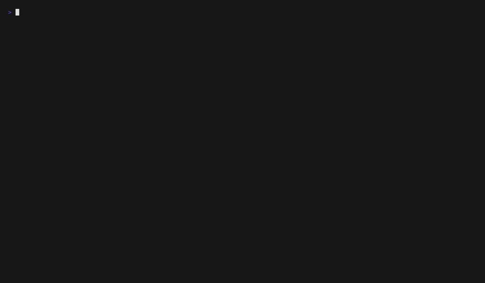

Showcase
Built for how you actually work.
A deeper look at what makes Granit different from everything else.

A real editor, in your terminal.
Not a toy. Full syntax highlighting for 200+ languages, multi-cursor editing, wikilink autocomplete, Ghost Writer AI suggestions, and a rendered reading mode with Mermaid diagrams and callout blocks.
- Multi-cursor editing with Ctrl+D and Ctrl+Shift+Up/Down
- Ghost Writer: inline AI suggestions, Tab to accept
- Full Vim mode with macros, marks, and dot repeat
- 18 built-in snippets, smart bracket auto-close
- Find and replace with regex, in-file and global
█ Task Manager\n Today Upcoming All Kanban Matrix\n ──────────────────────\n > [x] Ship v2.0 release ███ high\n [ ] Write documentation ~2h\n [ ] Review PRs 📌\n [ ] Deploy staging snoozed
'">
Tasks, goals, and plans. Unified.
Your tasks live inside your notes. Granit finds them all, gives you 7 views to organize them, and connects them to goals with milestones, reviews, and AI coaching. No separate app needed.
- 7 views: Today, Upcoming, All, Done, Calendar, Kanban, Eisenhower
- Subtasks, dependencies, snooze, pin, and templates
- Natural language dates:
@next week,@friday - Goal manager with milestones and progress sparklines
- AI-powered task triage and priority suggestions

█ Calendar — Week View\n ────────────────────────\n Mon Tue Wed Thu Fri\n 09:00 ███ . ██ . \n 10:00 . ███ . ███\n >10:30 ............now............\n 11:00 . . ██ .A calendar that lives in your terminal.
Six views from year overview to hourly day planner. Time-block your tasks, import ICS calendars, track goal milestones, and create events with a guided wizard -- all without leaving the keyboard.
- Month, week, 3-day, day, agenda, and year views
- Time-blocking: assign tasks to hourly slots
- ICS calendar sync with RRULE recurrence support
- Event wizard with title, time, duration, color, and recurrence
- Goal badges and daily focus in week headers